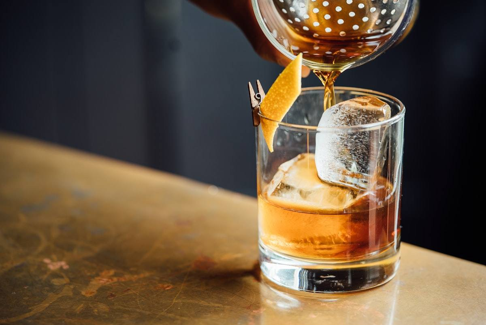

叫傳播要給小費嗎？不用強制給。台北傳播是鐘點制，時數費用已含完整服務，小費純屬自願。滿意的話常見行情約 NT$500-2,000，量力而為即可。給的時機以結帳前後、私下遞給女孩本人最得體。正派公司（如歐巴傳播）絕不強索小費，也不會因為沒給而擺臉色。

一、先搞懂：傳播的「鐘點費」到底包了什麼
要談小費，得先弄清楚你付的鐘點費到底涵蓋哪些服務。台北傳播不像國外餐廳有「服務費另計」的文化，你在預約時談定的每小時價格，其實已經包含了女孩完整的陪伴服務。
- 桌面陪伴： 遞酒、倒水、整理桌面、陪聊陪玩
- 氣氛帶動： 唱歌、划拳、骰子遊戲、炒熱全場
- 基本互動： 合意範圍內的肢體互動（搭肩、靠背等）
- 交通往返： 歐巴傳播的報價已含車資，不另外收
也就是說，你不給小費，也能享有完整、合約內的服務。小費從來不是「補足服務」的必需品，而是「額外心意」的加分項。搞懂這點，後面的討論就不會被業者話術牽著走。想先了解基本收費，可參考 叫傳播多少錢？台北傳播妹收費行情大公開。
二、到底要不要給小費？三種情境判斷
「該不該給」沒有標準答案，取決於你的體驗與意願。以下用三種常見情境幫你判斷：
1 服務普通、剛好及格
女孩準時到、態度正常、互動沒特別亮點。這種情況完全可以不給小費，付清鐘點費就是圓滿的交易，沒人會覺得你小氣。
2 服務超出期待、很投緣
女孩會撒嬌、會帶氣氛、聊得來、讓你整晚很開心。這時包個小費是很受歡迎的心意，也能替下次指定回頭鋪路。
3 有臨時追加或特殊配合
例如臨時延長、幫忙處理突發狀況、或配合你的特別要求。適度小費既是感謝，也是行內默契，長期下來對你只有好處。
三、傳播小費行情：到底該包多少？
這是最多人想問的問題。先講結論：台北傳播小費沒有硬性行情，重點是心意而非金額。不過為了讓新手有個參考基準，這裡整理常見的落點：
💰 2026 傳播小費參考行情（自願性質）：
- 一般滿意： NT$500 - 1,000，表達基本心意
- 很滿意 / 延長陪伴： NT$1,000 - 2,000，明顯加分
- 特別投緣 / 指定回頭： NT$2,000 以上，建立長期好關係
- 純表心意： 幾百元也完全 OK，女孩看的是態度
小費不是等級費用，也不是「潛規則加值服務」的門票。任何暗示「多包一點就能怎樣」的說法，都不屬於正規傳播範疇。小費就是單純的感謝心意，請量力而為，別被拿來當作討價還價的籌碼。
四、小費怎麼給最得體？時機與方式
會不會給、給多少是一回事，「怎麼給」更能看出一個人的細膩。以下是行內公認最得體的做法：
- 時機： 服務快結束、結帳前後最自然，不會打斷當下氣氛
- 方式： 用紅包袋裝、或把鈔票摺好，私下直接遞給女孩本人
- 低調： 避免在一群人面前高調發放，讓對方有面子也更舒服
- 一句話： 遞的時候簡單說「今天很開心，這個給妳」就很加分
特別提醒：小費請直接給女孩本人，那是屬於她的心意，不需要經過幹部。鐘點費則依公司流程統一結算，兩者分開才不會混淆。
五、給小費的隱藏好處：下次體驗差很多
對只玩一次的客人，小費純粹是心意；但對想成為常客的人來說，適度小費是回報率很高的投資：
- 印象加分： 女孩會記得你這位大方又懂禮貌的客人
- 指定更順： 下次指定回頭時，她更願意配合你的檔期
- 服務更用心： 熟客待遇往往比第一次更貼心、更放得開
- 口碑效應： 女孩之間會互相交流，好客人不愁約不到人
💡 過來人怎麼說
「一開始我也不知道要不要給，後來固定包個一千給聊得來的妹妹，結果每次指定她都很爽快，服務也越來越到位。這錢花得值。」—— 歐巴傳播常客 林先生
六、常見誤區：這些關於小費的迷思別再信
網路上關於傳播小費有不少以訛傳訛的說法，這裡一次澄清：
❌ 迷思拆解
- 「不給小費會被翻臉」 → 錯。正派公司的公關不得強索小費，歐巴傳播明文規定不得因此擺臉色。
- 「小費是規定要給的」 → 錯。小費 100% 自願，沒有任何強制性。
- 「小費包越多服務尺度越大」 → 錯。互動尺度依雙方合意，與小費無關。詳見 傳播互動尺度指南。
- 「小費要交給幹部分」 → 錯。小費屬於女孩本人，直接給即可。
七、遇到「強索小費」怎麼辦？
雖然正派公司不會發生，但市面上仍有不肖業者會用各種話術逼你多掏錢。碰到以下狀況，請提高警覺：
- 女孩暗示「不給小費不能延長」 → 延長應走公司正規計費，非私下加碼
- 幹部主動索取「服務費」「茶水費」 → 正規報價已含這些，額外索取即為坑
- 擺臉色、態度轉冷逼你加錢 → 這是變相勒索，不必妥協
遇到這些情況，最好的做法是直接反映給公司客服。歐巴傳播承諾價格透明、絕無強索小費，若有任何不當索費，公司會嚴肅處理。想了解如何避開不良業者，建議先看 傳播妹vs酒店 商務公關 合法性解析 預約流程 台北傳播公司怎麼挑？避坑關鍵秘訣。
八、預算怎麼抓？把小費一起算進去
如果你打算包小費，建議在出門前就把它算進總預算，才不會結帳時手忙腳亂。以下是一個新手可參考的預算範例：
🧾 一晚預算範例（保三等級 · 3 小時）：
- 鐘點費：NT$4,500 起（3 小時 × NT$1,500）
- 場地費：KTV 包廂 / 汽旅房費（依場地而定）
- 酒水消費：視點單而定
- 小費（自願）：NT$500 - 1,500
- 建議多帶： 現金抓寬一點，臨時延長也不慌
正派公司都是服務完成後現金結算、無追加費用，唯一「彈性」的就是小費這一塊，而它完全由你決定。
九、小費 vs 指定費：別搞混了
很多新手會把「小費」和「指定費」混為一談，其實兩者完全不同：
- 指定費： 想指定某位特定女孩時，公司收取的固定費用，屬於正規計費項目，事先會告知
- 小費： 服務後你自願給女孩的額外心意，沒有固定金額，也不經過公司
簡單記：指定費付給公司、小費給女孩本人。搞清楚這兩者，結帳時就不會被搞混，也不會重複付錢。
延伸閱讀
看完小費攻略，這幾篇也很值得一讀：
- 叫傳播多少錢？台北傳播妹收費行情大公開 — 各等級鐘點費一次看懂
- 第一次叫傳播？新手必看的 8 大避坑指南 — 新手完整入門
- 公關、保三、VIP 等級怎麼分？ — 選對等級體驗加倍
- 叫傳播安全嗎？隱私保護與防詐騙指南 — 保障自身權益
- 傳播妹vs酒店 商務公關 合法性解析 預約流程 台北傳播公司怎麼挑？避坑關鍵秘訣 — 選對公司不被坑